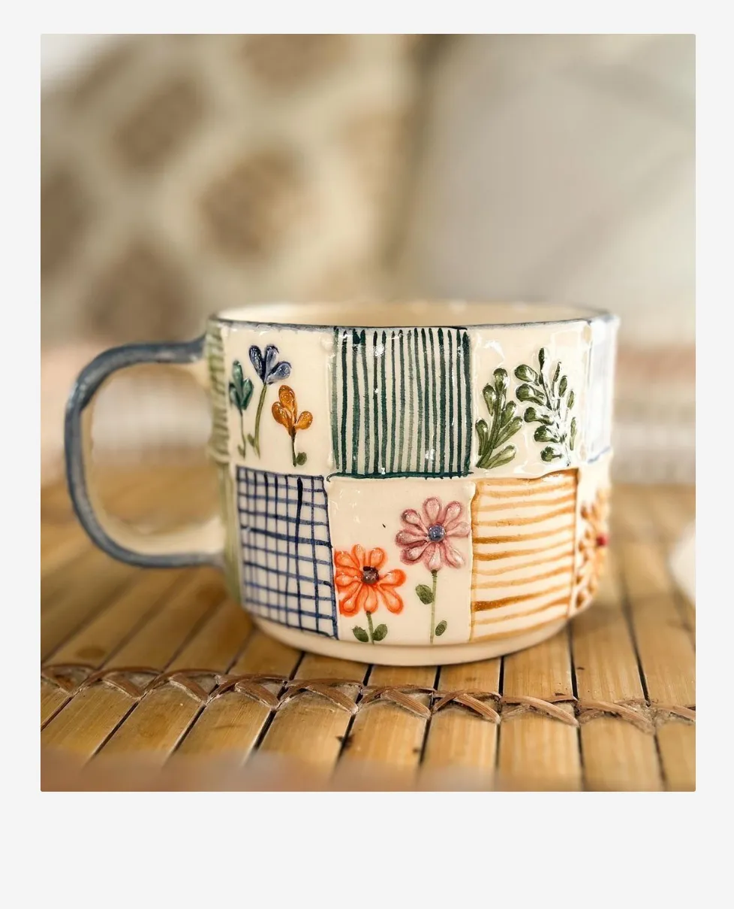
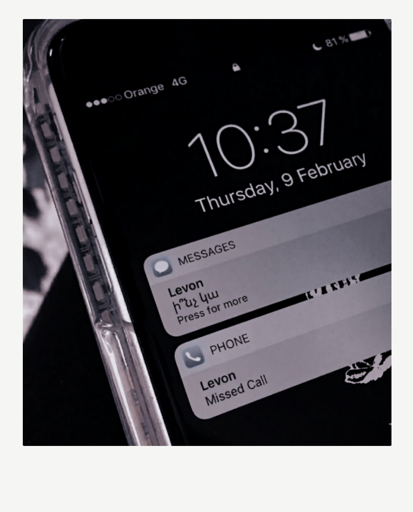
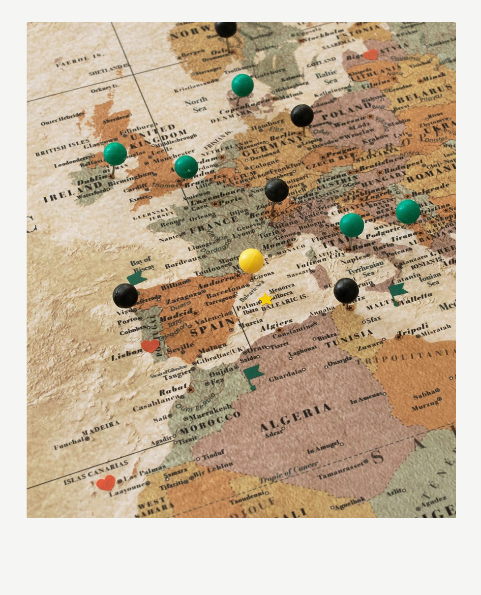
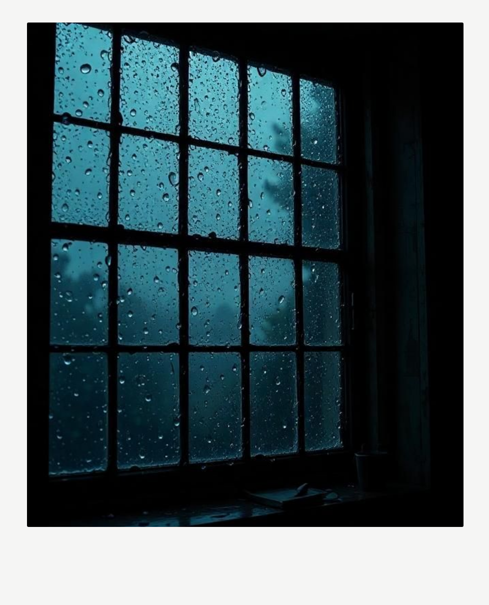
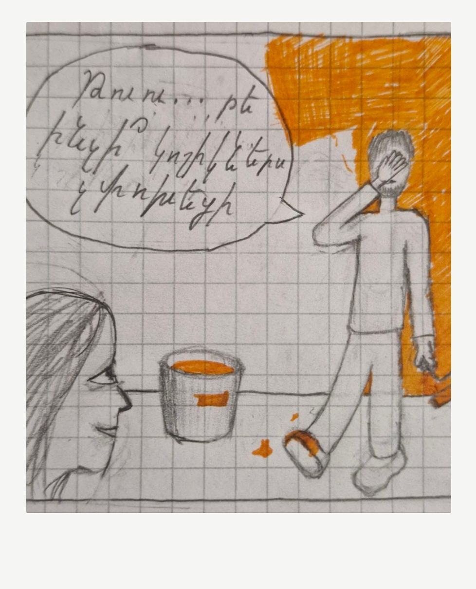
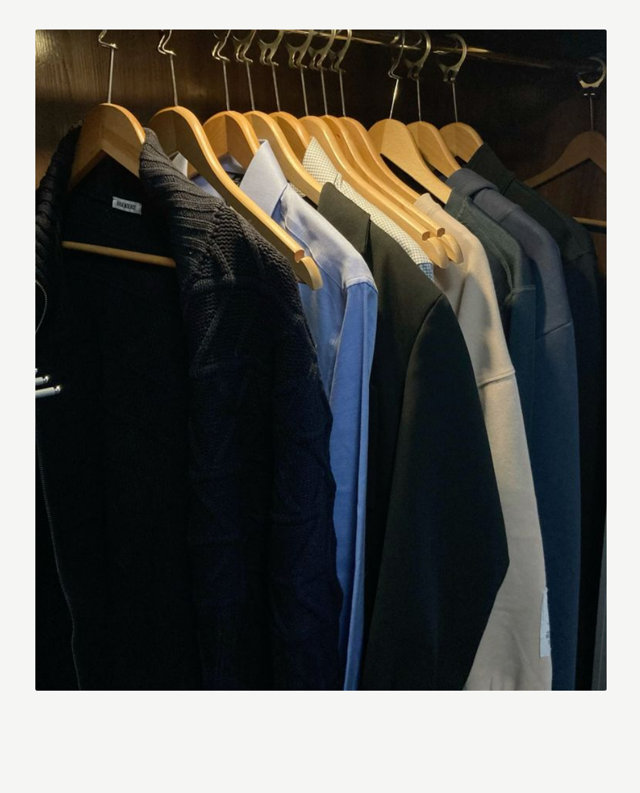
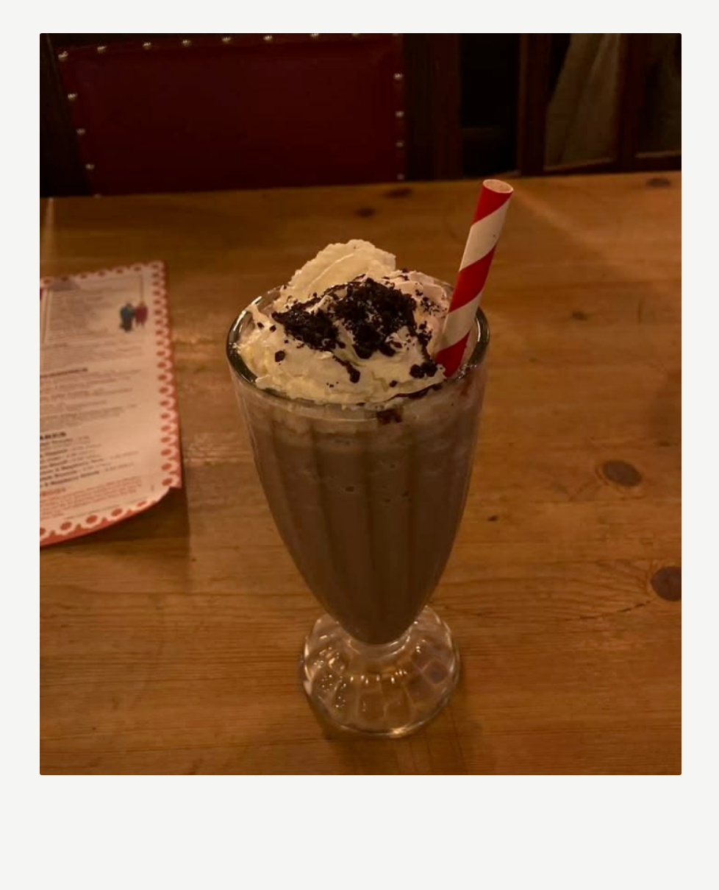

04.03
Խնկի հոտը դեռ զգում եմ։ Երեկ ամբողջ օրը միտքս արարողակարգն ու հարազատներն էին, ոնց-որ ներկա
չլինեի։ Բայց որ հասանք տուն, չէի կարողանում ներս մտնել։
Չգիտեմ էլ ինչ եմ գրում։ Կամ ինչու...
05.03
Արդեն երկրորդ օրն բազմոցին եմ քնում, ավելի ճիշտ փորձում եմ։ Սենյակ դեռ չեմ մտել։ Նոր քույրս գնաց, խեղճը
քանի օր է հետս էր անընդհատ։ Հիմա մենակ եմ, այնքան տարօրինակ է, այնքան... լուռ։
08.03
Այսօր երազիս նրան տեսա, որ ոնց-որ սիրտս կանգներ։ Հետ քնել չստացվեց, ստիպված վեր կացա, մի
բան կերա։Փորձեցի աման լվանալ, ֆունկցիոնալ լինել։ Հասա թեյի բաժակին որ ինձ անցած տարի էր նվիրել, բայց ինձանից հաճախ էր օգտագործում։ Մեջը դեռ իր սուրճից էր մնացել։

13.03
Արդեն մի քանի օր է վերադարձել եմ աշխատանքի։ Առաջին օրը անընդհատ սպասում էի որ հեռախոսս հեսա կզնգա,
նամակ կստանամ որում հարցնում է թե ոնց է անցնում օրս, ճաշել եմ արդեն թե չէ։
Իսկ երեկոյան տուն էի վերադառնում, դուռը բացում, իսկ տունը լրիվ դատարկ և մութ, ինձ դիմավորող չկար, ոչ էլ ես էի ինչ-որ մեկին դիմավորելու։ Ինչ-որ բան մեջս մարեց այդ պահին։

20.03
Սենյակ էի հետ տեղափոխվել, թեթև դասավորում էի։ Մի պահ դեպի անկողնի իր հատվարծը գնացի, անցա պահարանի իրերի
վրայով։ Վերևի դարակում ինչ-որ պատմվածք էր որ կարդում էր վերջերս։ Հիշեցի ինչ ոգևորությամբ էր
պատմում, ձայնը գրեթե լսեցի։ Երբ վերցրի գիրքը, բարակ էջանշանը տեսա էջերի արանքում։ Չէր հասցրել ավարտել։ Էլ
երբեք չի հասցնի
։
07.04
Այսօր մեր ծանոթության տարեդաձրն էր։ Ակտիվորեն փորձում էի առհամարել այս օրը, մինչև հեռախոսը չհիշեցրեց։ Դեռ շուտ
փոքր նվեր էի պատրաստել, թաքցրել նրա աչքից հեռու։ Բայց էլ իմաստ չկար։ Դեն նետեցի։
28.04
Նամակ ստացա դեսպանատնից, որ վիզաները հաստատել են։ Լավ ծիծաղացի։ Ինչքան պլաններ ունեինք, ճամփորդելու,
որոշ
ժամանակ հետո հնարավոր է տեղափոխվելու, կենդանիներ պահելու։ Գումար էինք հավաքում, երազում ու սպասում։ Իսկ հիմա
այդ ամենն անիմաստ է։ Լվացքը որ մինչև այդ անում էի էլի անիմաստ է։ Վաղը աշխատանքի գնալն էլ։ ընդհանրապես
ոչնչում էլ իմաստ չի մնացել։

20.05
Արդեն երեք օր է անձրև է գալիս։ Թե՞ չորս։ Արդեն չէմ էլ հիշում։ Էս վերջերս առավել դժվար է անգամ գրություններ
թողել։ Հիմա էլ չգիտեմ ինչ ասեմ։

13.06
Երբ իջա նկուղ, տեսա վրձինները, որոնցով ինքնավստահ մեր սենյակի պատերը նարնջագույն էինք ներկում։ Արագ բարձրացա
վերև
որպեսզի համոզվեմ որ չեմ հորինում։ Իրոք նարնջագույն էին Հիշեցի թե ոնց էր ներկը նրա կոշիկի վրա թափվել։ Չգիտեմ
ինչ փչեց
մտքիս, փոքր կոմիքս նկարեցի որպես հիշատակ։ Հավես էր։

09.07
Վերջապես խիզախեցի պահարանները դասավորեմ։ Արդեն երեք ամիս էր անցել, իսկ ես նոր եմ բացում իր պահարանի դուռը։
Հանեցի շորերը, հերթով ծալեցի և հիշեցի ինչը որտեղից էր, երբ էր հագնում, սիրում էր թե չէ։ Թվաց թե հոտը դեռ
գալիս էր։

30.07
Երեկ գործից հետո ընկերուհուս հետ քայլում էինք կենտրոնով, երբ պատահմամբ
հանդիպեցի այն սրճարանին, որտեղ հաճախ էինք գալիս։ Փոքր ավանդույթ էր դարձել մի քանի ամիսը մեկ գալ, սուրճի նոր
համեր փորձել։ Այդ պահին քարացա։ Այսօր մենակով գնացի, իր սիրած միլքշեյքը պատվիրեցի։ Ընդհանրապես համով չէր, բայց
երևի ճաշակին ընկեր չկա։ Հաջորդ շաբաթ էլի կգնամ:

03.08, - Վերջին գրություն
Այսոր լրանում է Լևոնի մահվան հինգ ամիսը։ Արդեն։ Թվում է թե մի օր էլ չի անցել, և ես դեռ ժամանակ առ ժամանակ
կարծես մոռանամ որ նա էլ չկա։ Դրա հետ մեկ տեղ, մի ամբողջ անտանելի դանդաղ հավերժություն է անցել։
Այս ընթացքում օրագիրը ինձ շատ օգնեց մտքերիս հետ բացարձակ մենակ չլինել։ Սկզբում ուղղակի վերադարձա հին սովորությանը ինքստինքյան և առանց սպասելիքների։ Բայց հիմա, երբ թերթում եմ էջերը, հասկանում եմ՝ էլ նույն հոգեբանական վիճակում չեմ ինչ սկզբում էի։ Ինքս ինձ քար առ քար հավաքում եմ, հետ բացահայտում մեր հին կյանքը և հիշողությունները, անգամ մի թեթև ստեղծագործում եմ դրա մասին։ Կյանքը շարունակելը այլևս դավաճանություն չի թվում, այլ հարգանք անցյալի նկատմամբ, իսկ օրագիրը՝ ևս մի ապացույց որ անցյալը եղել է։